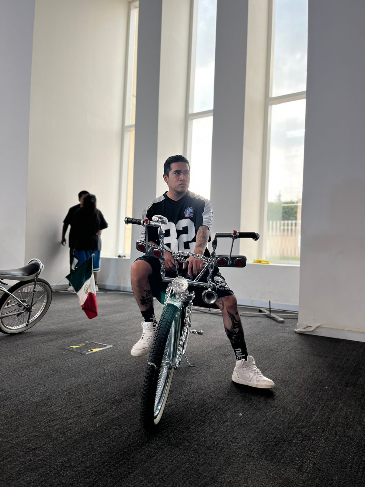
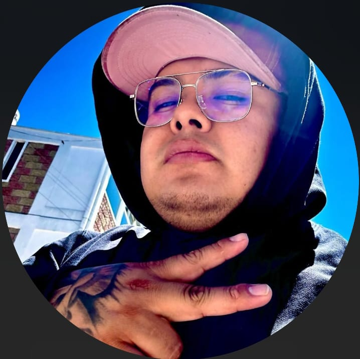
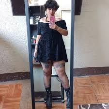
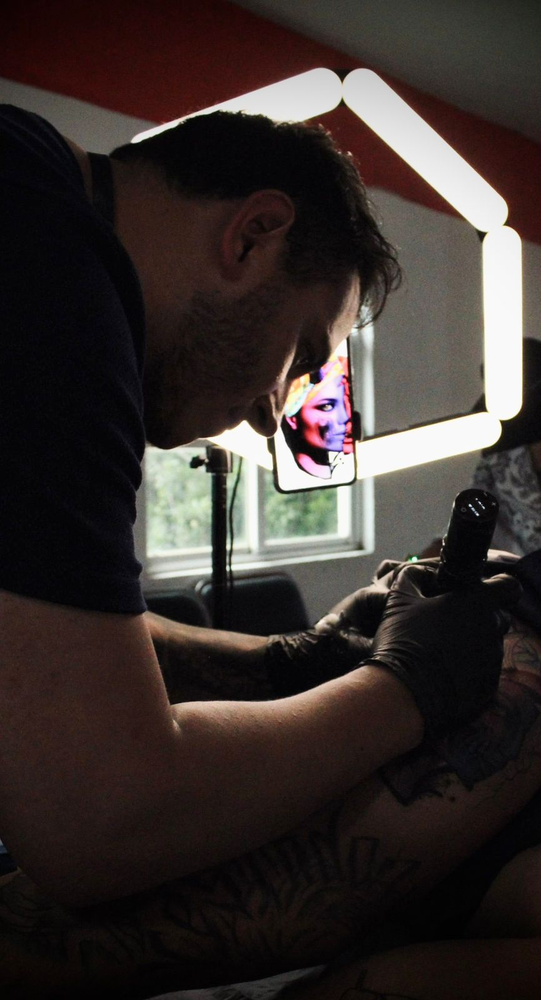
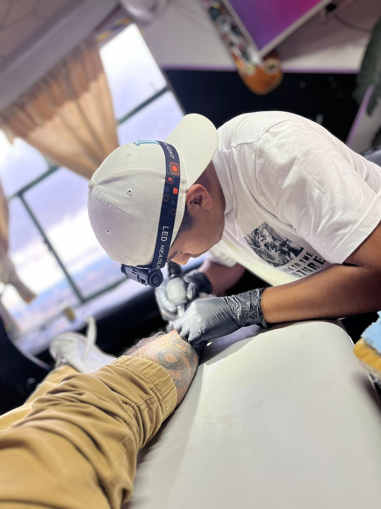
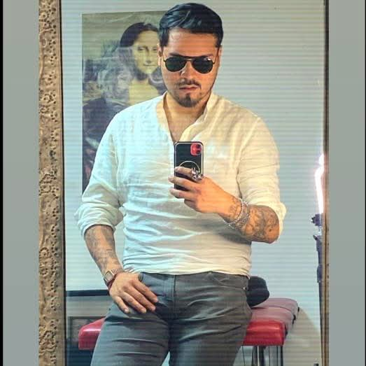

 Salvador Villanueva
originario de tenango del valle, radica en tenango, toluca y cdmx
instagram: http_chava
facebook: Salvador Villanueva
 Josh
originario de tetengo del valle
radica en tenango, metepec, toluca y cdmx
instagram: Josue Joshtattoo
facebook: Josh tatto
 yaya
originaria de tenango del valle realiza cualquier estilo
sus redes:
facebook: Yaya Zihuatlapzin
 cristian garcia
originario de tenango del valle, tatuador destacado en full color
sus redes:
instagram: crist_garcia.tattoo
facebook: Cristian Garcia
 jonathan
tatuador originario de tenango del valle, actualmenta radica en tenango del valle, toluca y metepec
sus redes:
instagram: Jef_ttt
facebook:Jonathan Alvarado
 eduardo guitierrez
tataudor de tenango del valle, radica en tennago del valle y calimaya
sus redes:
instagram: tatto_ed
facebbok: Eduardo Gutierrez